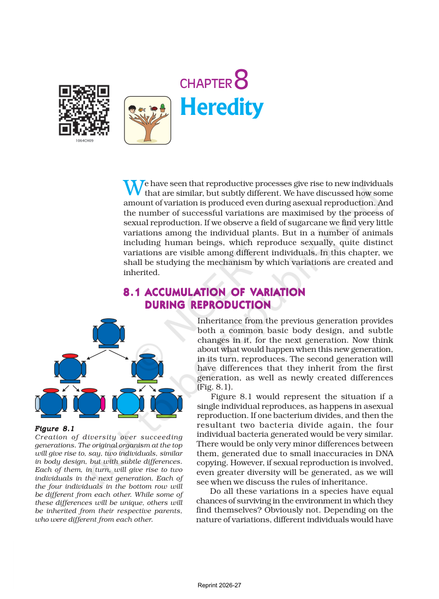
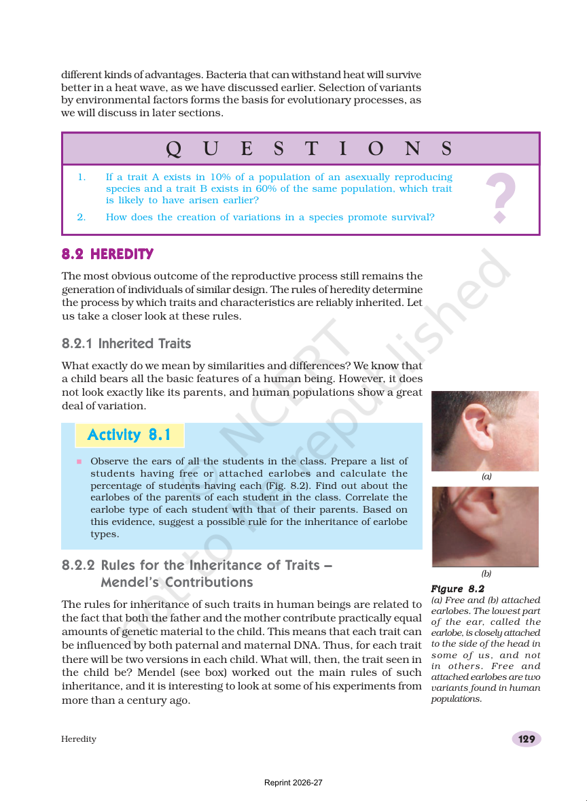
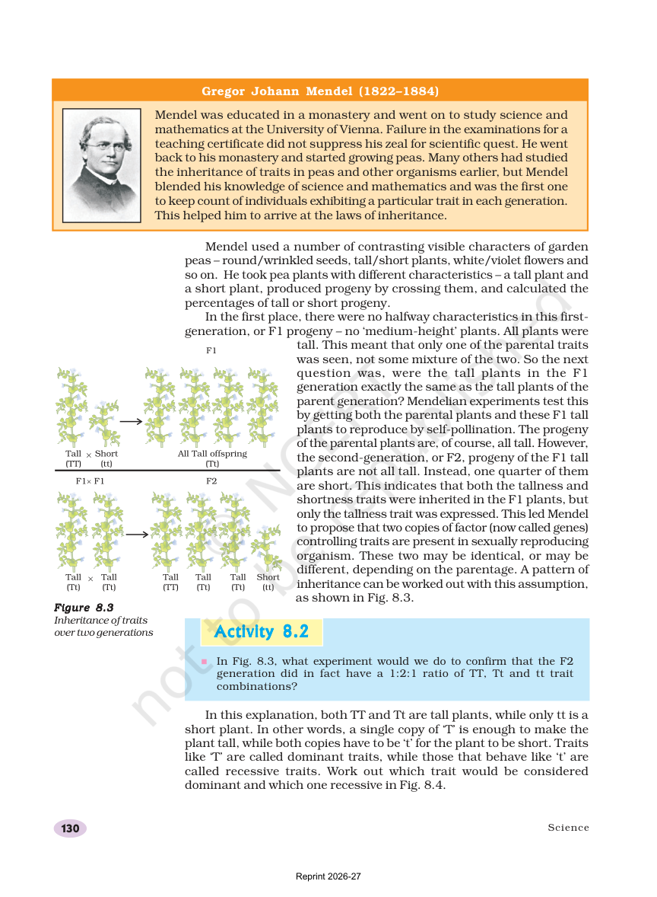
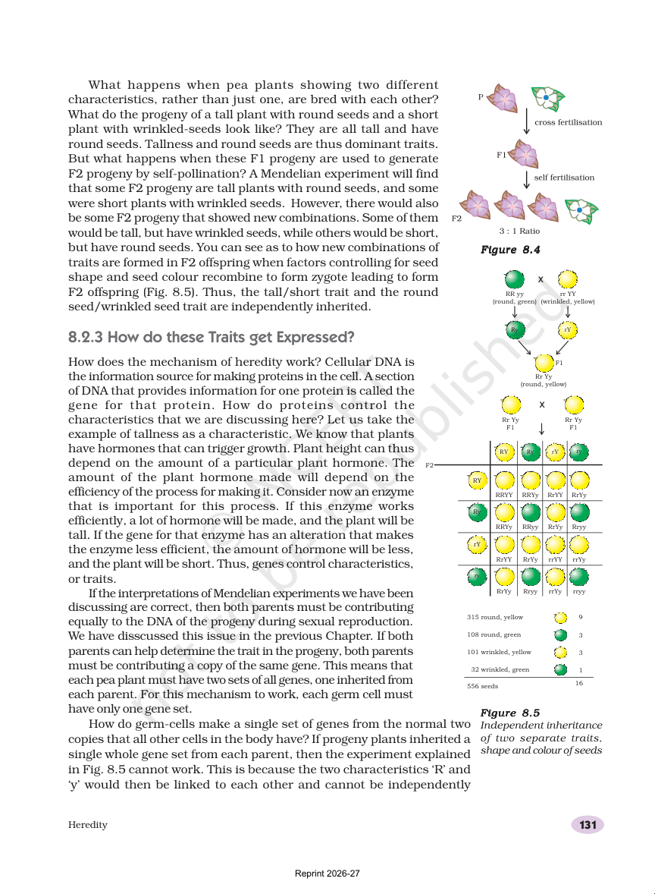
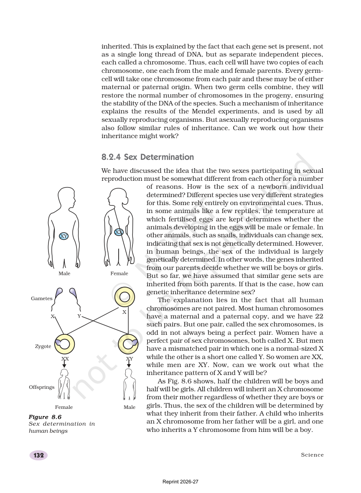
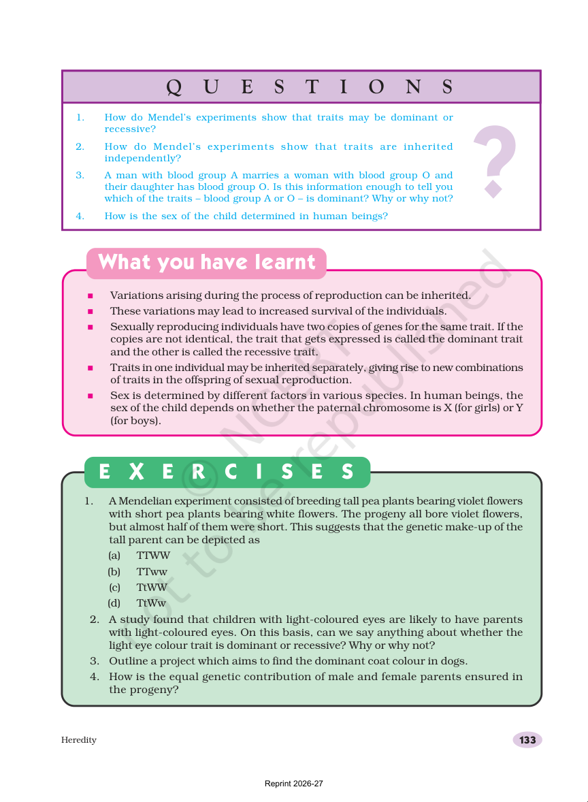

The chapter starts with a simple picture: children look like their parents, but not exactly. That small difference is called variation.
Variation can be useful because it gives a species a better chance of surviving changes in the environment.
Offspring are similar, not identical.
Variation appears during reproduction.
Variation can help survival.

The opening pages show that offspring are similar but not identical.
Heredity Passes Traits On
Heredity means passing traits from parents to offspring. The chapter uses examples such as earlobes and eye colour to show this.
At the same time, the chapter reminds us that traits can vary in a population.
Big picture: heredity keeps the family likeness, while variation adds the differences.

The early chapter pages connect inherited traits to the next generation.
Quick Check
Your answers are saved in this browser.
What is variation?
Variation means the small differences we see among individuals.
Why can variation help a species survive?
Variation gives at least some individuals a better survival chance when conditions change.
What does heredity do?
Heredity is the passing of traits from one generation to the next.
Are offspring usually exact copies of their parents?
The chapter keeps stressing that offspring are similar, but not exact copies.
Which trait is an example often used in the chapter?
The chapter uses earlobe type as one example of inherited variation.
M1: Mendel's Pea Experiments
Read, look, then check yourself.
A Tall Plant Can Hide a Short Trait
Mendel crossed pea plants with contrasting traits, such as tall and short. In the first generation, all the plants were tall.
When the first generation self-pollinated, the second generation showed both tall and short plants.

The pages explain how Mendel studied tall and short pea plants.
Two Traits Can Be Inherited Independently
Mendel also studied more than one trait at a time. He found that shape and colour of seeds could be inherited independently.
The chapter also gives the idea of dominant and recessive traits. If a trait appears with one copy, it is dominant. If it shows only when both copies are the same, it is recessive.
Dominant trait: shows with one copy
Recessive trait: shows only with two matching copies
Independent inheritance can create new combinations

The next page shows the famous pea experiment with seed shape and seed colour.
Quick Check
Your answers are saved in this browser.
What did Mendel study?
Mendel used pea plants with different visible traits.
What did the first generation of Mendel's tall and short cross show?
The first generation showed only the tall trait.
What is a dominant trait?
A dominant trait appears when a single copy is present.
What is a recessive trait?
A recessive trait shows only when both copies are the same.
What kind of new offspring can independent inheritance produce?
Independent inheritance mixes traits into new combinations.
M2: Genes, Chromosomes, and Sex Determination
Read, look, then check yourself.
Genes Help Make Proteins
A gene is a section of DNA that gives instructions for making a protein. Proteins help create the traits we see.
The chapter also explains that chromosomes carry genes. Each parent gives one copy, so sexually reproducing organisms usually have two copies of each gene.

The chapter explains how genes, chromosomes, and traits fit together.
XX, XY, and the Father's Role
In humans, sex is usually determined by chromosomes. Females have XX and males have XY. The mother gives an X chromosome to every child. The father gives either X or Y.
If the father gives X, the child is a girl. If the father gives Y, the child is a boy.
Short summary: genes guide traits, chromosomes carry genes, and X or Y helps decide sex in humans.

The final page shows how sex is determined in human beings.
Quick Check
Your answers are saved in this browser.
What is a gene?
The chapter defines a gene as a DNA section that provides information for one protein.
What do chromosomes carry?
Chromosomes are the structures that carry genes.
How many copies of each gene do sexually reproducing organisms usually have?
The chapter says sexually reproducing organisms have two copies of genes for the same trait.
What sex chromosome pair do females have in humans?